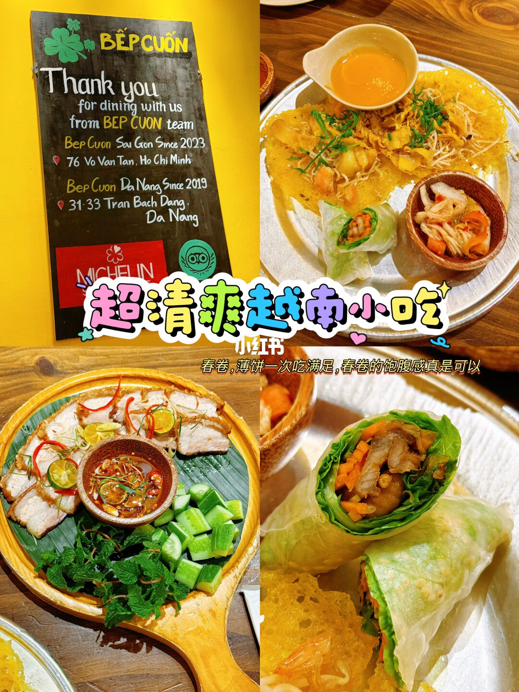
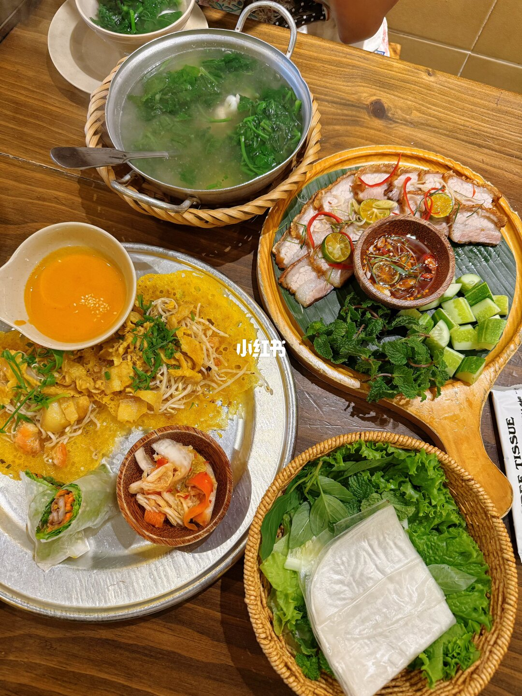
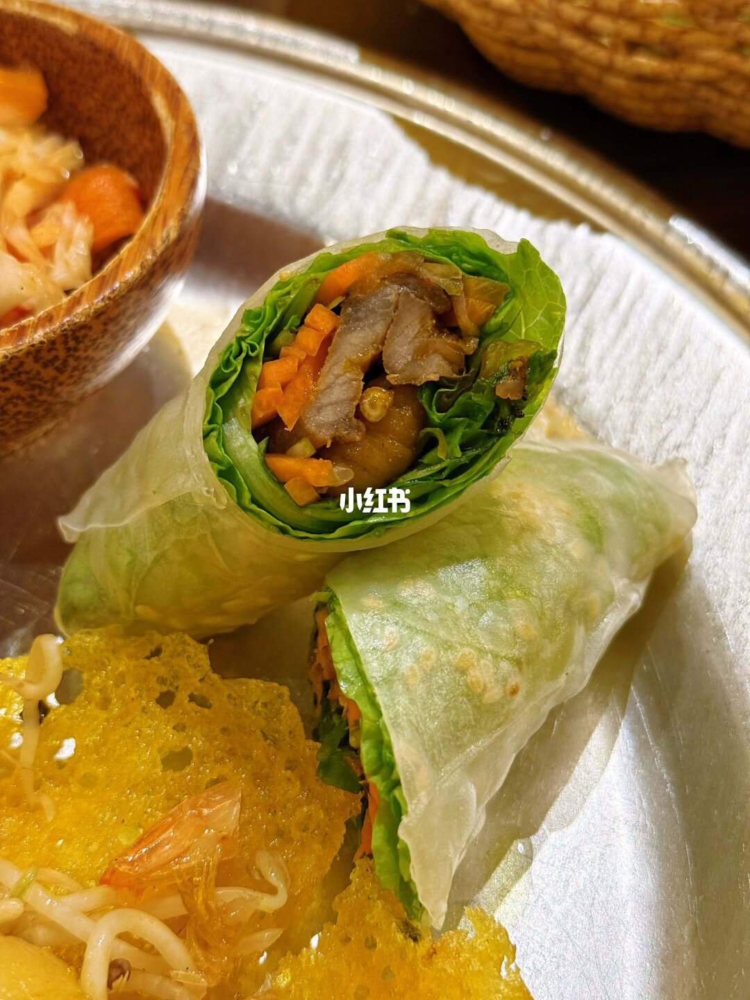
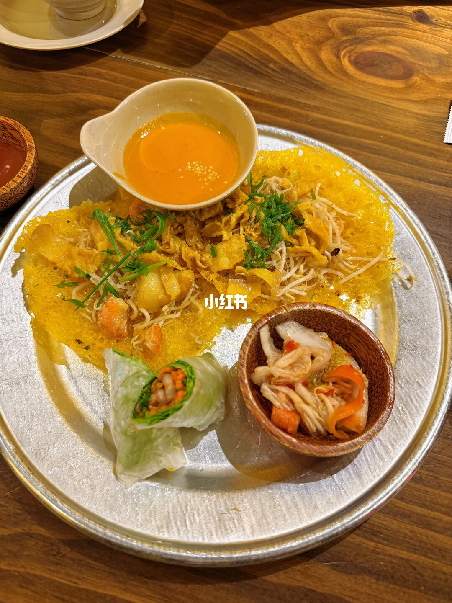
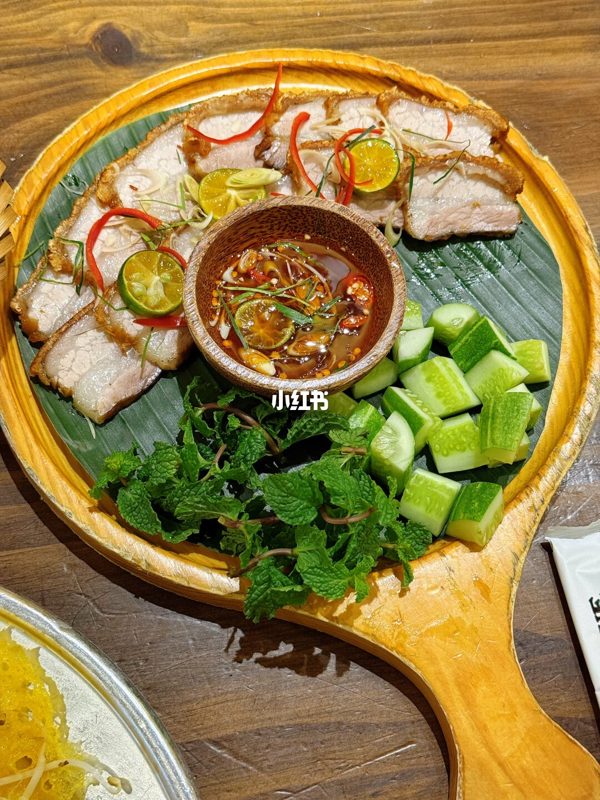
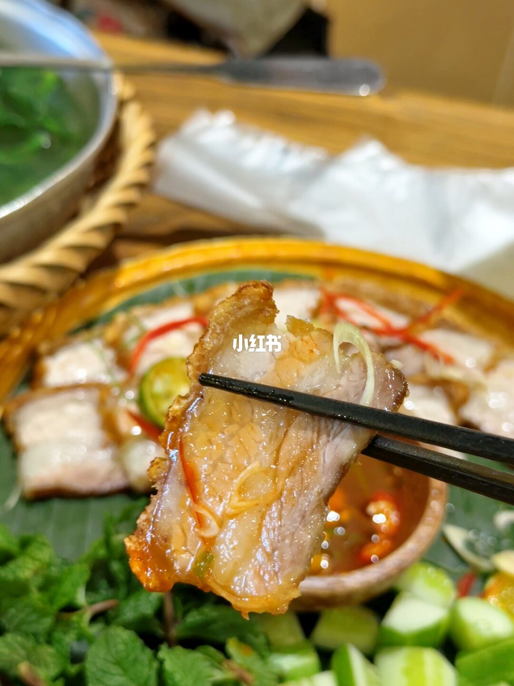

美食筆記 · 來自 Obsidian
胡志明平價米其林小店

閒逛逛到胡志明🏠這家BẾP CUỐN，居然還是米其林入選小店，價格還很親民。
現做越南薄餅酥到掉渣，搭配清爽手工春捲剛好解膩；🍅🥩西紅柿脆皮五花蘸特色魚露，配上薄荷黃瓜，是地道本地口味。
🍽️店裡大多本地人用餐，沒有過度網紅化，來這邊逛想吃地道小吃可以順路嘗嘗。
- 店名：Bếp Cuốn Sài Gòn（米其林入選，峴港另有本店）
- 地址：76 Võ Văn Tần, Xuân Hòa, Hồ Chí Minh
- 營業時間：每日 11:00 – 21:00
- 電話：+84935581589
- 網站：facebook.com/bepcuonsaigon
- 越南薄餅（Bánh Xèo）：黃色脆皮煎餅，配芽菜、蔬菜絲＋橙黃色醬汁
- 手工春捲：透明米紙包生菜、紅蘿蔔、肉片，清爽解膩
- 脆皮五花：外酥內嫩，配辣椒絲、小青椒、魚露蘸醬、薄荷黃瓜
- 涼拌菜：蘑菇、紅蘿蔔絲木碗沙拉
- 招牌資訊：BEP CUON Since 2023（胡志明）/ Since 2019（峴港）、含 MICHELIN 標誌與 VEGAN 標示
📸 實拍





📌 資料來源：內容與照片來自小紅書實地帖文（Pebble 擷取至 Obsidian，2026-10）。
營業時間、價格與電話可能變動，出發前建議以現場或官方最新資訊為準。